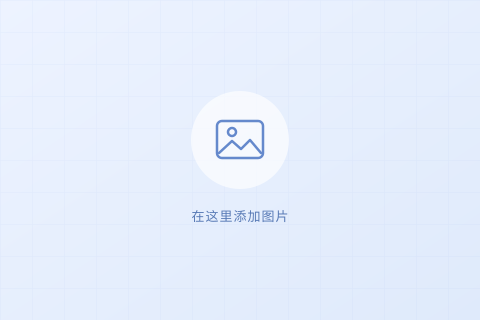

研究项目
在这里填写研究项目标题
用两三句话介绍研究问题、采用的方法，以及项目的主要成果。左侧可以放实验照片、系统示意图或结果展示图。
在这里填写研究方向与兴趣，用一两句话介绍关注的问题和希望探索的主题。
示例模板 以下为展示样式的占位内容。

研究项目
用两三句话介绍研究问题、采用的方法，以及项目的主要成果。左侧可以放实验照片、系统示意图或结果展示图。
论文成果
在这里填写会议或期刊名称、年份，以及一句简洁的成果介绍。
示例模板 替换日期和文字即可添加动态，也可按需添加链接。
在这里填写一条消息通知，例如论文发表、项目进展或学术交流。
在这里填写一条带链接的消息通知。示例链接：我的 GitHub
中南大学 · 计算机科学与技术
2026 — 至今中南大学 · 软件工程
2022 — 2026联系